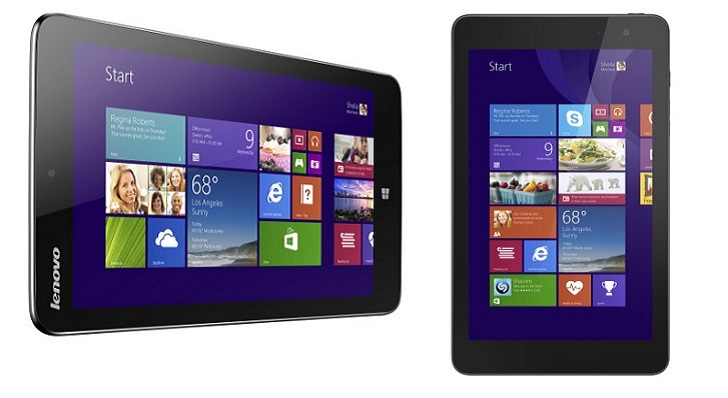

Acer Iconia W4-820 - Review
Business tablets never feel quite right when using iOS, Windows RT or Android, but Windows 8.1 is a much better fit - the full-fat version of Microsoft's OS can run desktop software, and these machines often come with more powerful specifications than their business counterparts. The Venue 8 Pro is the latest in a growing band of smaller tablets that run Microsoft's latest OS, and it looks like Dell's machine will be a contender. For starters, it's crammed with business-friendly features: support for Dell's Active Stylus makes work and navigation easier, there's expandable storage, dual-band Wi-Fi, one of Intel's latest processors and a wide variety of accessories and service options. The physical design is suitably subtle, too. The Venue 8 Pro is clad in soft-touch plastic with a low-key pattern of concentric circles on the rear, and its screen is surrounded by a familiar glossy black bezel. It doesn't stand out as much as its rivals, but we've not got any issues with the Venue 8's exterior: this is a sturdy, well-made bit of kit that'll easily withstand a few knocks. The price, crucially, also looks right. Venue 8 Pro tablets start at £249, and a more expensive model costs £329 - here, storage is doubled to 64GB and a mobile broadband SIM is included, although it's locked to O2 and you'll need to pay for your own data. Both configurations can be customised with numerous warranty options alongside theft and damage protection, all of which will help businesses. Dell also produces a wireless keyboard, folio and rugged cases and a stylus, although the latter is temporarily unavailable.
Design
The Venue 8 Pro combines a compelling feature set with a tempting price, but this market is becoming increasingly crowded. Acer has already debuted a Windows 8.1-inch tablet with an 8-inch screen, and the Iconia W4 can be bought for around £250 - not far off the cheapest Venue 8 Pro. We've also been hands-on with the Lenovo ThinkPad 8, which was debuted at CES and includes a Full HD screen as well as a reassuring ThinkPad design.
Elsewhere, Dell has to contend with hybrid systems like the Asus Transformer T100, which has a detachable screen alongside a physical keyboard, and Microsoft's own Surface Pro 2 - a high-quality 10-inch device that comes with a familiar fabric-covered keyboard.
And, outside of the Windows ecosystem, the Venue faces stiff competition from two of the best small tablets on the market. Apple's iPad mini has the best selection of apps around and now comes with a high-resolution Retina screen, and the Nexus 7 has similarly impressive hardware - and it starts at less than £200, depending on storage capacity.
The Venue 8 Pro uses an Atom Z3740D - one of Intel's Bay Trail processors designed for tablets. It's a quad-core chip with a 22nm manufacturing process, and this part comes from the middle of the range. It's clocked to 1.33GHz but rises to 1.86GHz, thanks to Intel's Burst Performance Technology. It's the same processor as the Acer, and the same Bay Trail technology as the Asus Transformer.
Bay Trail doesn't just get a leg up thanks to Bay Trail's CPU silicon - it includes a new integrated graphics core, too. The core inside the Z3740D is clocked to between 313MHz and 688MHz, which are the fastest speeds available inside Bay Trail.
Elsewhere, there's 2GB of low-power DDR3L RAM, and the model we've reviewed comes with a 32GB SSD that provides 23.2GB of usable space once Windows has been installed. That's not much room, especially if you install plenty of apps or games - thankfully, the more expensive Venue 8 Pro model includes a 64GB drive, and the Venue's microSD slot supports cards with an extra 128GB of space.
Dual-band 802.11n Wi-Fi is included alongside Bluetooth 4.0, but we've got a couple of quibbles when it comes to connectivity. That wireless chip is a 2x2 MIMO unit that's not as rapid as chips with three or four antennas, and mobile broadband is only available in the most expensive Venue 8 Pro model - and, even then, it's locked to O2.
The 8-inch screen uses IPS technology, but its native resolution of 1,280x800 isn't anything to shout about. It's the same resolution as the Acer, but it's poorer than the Full HD screen of the forthcoming Lenovo tablet, and it's low when compared to the Retina-level panels included in the iPad mini and Nexus 7.
It's all packaged inside a 395g chassis that's 9mm thick. That's lighter and slimmer than the Acer, which weighs 415g and is 11mm from front to back, and similar to the forthcoming Lenovo. The Dell is svelte enough to never weigh us down, but non-Windows devices are slimmer still: the Nexus 7 and iPad mini are 8.5mm and 7.2mm thick respectively, and both of those tablets weigh around 300g.
Unusually, this tablet has no Windows button on its front panel - instead, Dell has moved it to the top edge. It takes a little while to get used to this change, but it works well enough. Another edge has the power and volume buttons, and a microSD slot hidden beneath a flap.
The single speaker is on the bottom edge, and it's off-centre so it won't be blocked by hands when the Venue is used in landscape mode. That's a clever bit of design, but the lone audio unit pumped out sound with plenty of volume but little nuance or quality.
3DMark
Ice Storm: 14,007
Cloud Gate: wouldn't run
Fire Strike: wouldn't run
Cinebench
CPU: 0.91
GPU: 5.73
GeekBench
Single core: 619
Multi-core: 1906
PCMark 8
Home battery life: 8 hours 17 minutes
In Cinebench, the Dell scored 0.91 and 5.73fps in the CPU and OpenGL tests - but the Acer Iconiascored 1.16 and 6.21fps in the same benchmarks, and the Asus Transformer had similar speed. TheSurface Pro 2 scored 2.52 and 20.97fps.
This machine's 3DMark Ice Storm result of 14,007 was a handful of points ahead of the Acer, but it's still behind the Asus and Microsoft machines - and the Venue simply wouldn't run more demanding 3DMark tests.
The Venue didn't compare well to Windows devices, and it returned mixed results when up against Android and iOS tablets. The Dell's GeekBench single- and multi-core scores of 619 and 1,906 were ahead of the Nexus 7's 571 and 1,796, but the iPad mini scored 1,291 and 2,320 in those tests.
They're not exactly high-end benchmark results, and the lack of power manifested itself in several ways. Even basic applications sometimes took seconds to load in desktop mode, and there was occasionally a delay when loading the Start screen and its own apps - although Metro UI software did run smoothly when it had loaded.
Multi-tasking brought the Bay Trail CPU to its knees, with poor performance across the board, and there's no chance of running more intensive desktop applications - poor form for a work machine.
The screen was sluggish and inconsistent when switching orientations, and even the on-screen keyboard was sometimes slow to appear. The whole experience just isn't as smooth as iOS or Android, and we'd be loathe to use this for a whole day at a desk or in the field.
The bulk of the Venue's body is taken up by a 4,830mAh battery, and this unit lasted for just over eight hours in our PC Mark test. It's only 13 minutes short of the Acer and its slightly larger power pack, and it's a good score for a Windows machine - but it's not able to match the Nexus and iPad mini.
The first batch of Venue 8 Pro tablets were afflicted by a firmware issue that caused the screen to stay unnaturally dim, but that's now been fixed. Updated Venue 8 Pros returned a superb brightness level of 399cd/m2. That's higher than many laptops, and not far off the Nexus and iPad's figures.
It's a good result, and it ensures that the Venue 8 Pro will never look dim. The contrast ratio of 1,663:1 is even more impressive, and it means that this screen always looks bright and punchy - there's none of the dimness categorised by cheaper slates.
Viewing angles are consistently good, and the Venue's touchscreen layer proved to be both accurate and subtle, with no visible grain.
The biggest issue with this screen is its resolution. The 189ppi panel used here is the match of the Acer, but it can't compete with the Full HD screen on the forthcoming Lenovo tablet, and other devices are sharper still: the Nexus 7 and iPad mini have PPIs of 323 and 326 respectively.
It's not a terminal issue, but it's undeniably irritating - the on-screen keyboard takes up half the screen, for instance, which often blocks other software.
The Venue 8 Pro is a solid small tablet: it's got a bright, accurate screen, decent battery life, superb build quality and the latest technology inside. It's also better than its closest rival, the Acer Iconia W4, when business use is concerned: certain Dell models are more expensive, sure, but they have more storage and mobile broadband, and there are more extensive accessories and service options.
Stylus
The Dell, though, also suffers in the same areas as the Iconia. Bay Trail might be the latest hardware from Intel's foundries, but it doesn't have the power to run high-end work software - and, in our tests, it sometimes struggled to handle more basic tasks too. Tablets that run Android and iOS are much smoother. There's also the question of future-proofing, as more impressive hardware will soon arrive: Lenovo's ThinkPad 8 will have a Full HD screen, a faster processor, and up to twice the storage space. That's not to mention other small tablets that will arrive with 64-bit processors and more RAM.
We liked
The Dell's screen is one of the brightest we've seen on any tablet, and it works well as a touchscreen. Connectivity options are broad, including mobile broadband on more expensive models, and the Venue 8 Pro's exterior is consistently impressive: it looks good and feels strong. Windows 8 doesn't have the app selection of Android or iOS, but the desktop mode included in this OS means that the Dell can run legacy applications - a potential boon for business. And, with the cheapest Venue 8 Pro available for £239, it's a little cheaper than the Iconie.
We disliked
Performance isn't exactly the Dell's strong point. Its benchmark results lag behind larger Windows-based machines, and real-world tests illustrate mixed speed: basic software and Start screen apps run smoothly, but the OS occasionally struggled, and intensive work applications are beyond the Dell's abilities. The 32GB of storage in our sample is tight, too, and you'll have to pay at least £329 to double the amount of memory. The speakers are poor, the screen's resolution isn't as high as many other machines - including the forthcoming Lenovo - and the mobile broadband is locked to one network.
Verdict
The Venue 8 Pro is one of the best small Windows 8 tablets on the market, and it's got the power to run basic desktop software, older applications and Start screen apps, but tablets like the iPad mini and Nexus 7 have better screens, smoother operating systems, superior longevity and a much broader selection of native apps - and, in the Nexus 7's case, it's cheaper too. If you need a Windows machine for working, this is a better bet than the Acer - but we'd consider whether we needed Windows at all before dropping cash on the Venue 8 Pro.